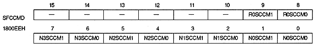
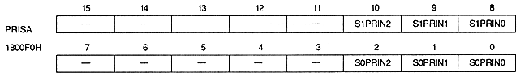
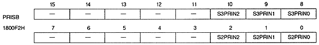
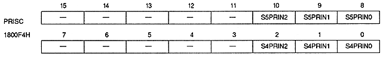

Special color calculation mode bit
N0SCCM1, NOSCCM0 | 1800EEH | bits 1,0 | NBG0 (or RBG1) |
N1SCCM1, N1SCCM0 | 1800EEH | bits 3,2 | NBG1 (or EXBG) |
N2SCCM1, N2SCCM0 | 1800EEH | bits 5,4 | For NBG2 |
N3SCCM1, N3SCCM0 | 1800EEH | bits 7,6 | NBG3 |
R0SCCM1, R0SCCM0 | 1800EEH | bits 9,8 | for RBG0 |
xxSCCM1 | xxSCCM0 | Mode | Process | ||||||||
0 | 0 | 0 | |||||||||
0 | 1 | 1 | |||||||||
1 | 0 | 2 | |||||||||
1 | 1 | 3 |


